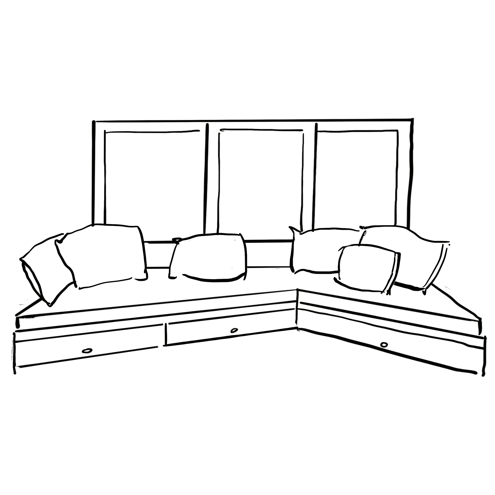

Compact appartement – Slimme ingrepen, maximale beleving Voor dit compacte appartement werkte ik aan een ontwerp dat ruimtegevoel en functionaliteit maximaal combineert. Door slimme ingrepen zoals maatmeubilair, strategische zichtlijnen en het gebruik van warme materialen, ontstond een lichte, flexibele leefruimte met karakter. Het project toont mijn oog voor detail, mijn gevoel voor sfeer én mijn vermogen om kleine ruimtes groot te laten aanvoelen.
